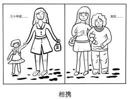

2014 年全国硕士研究生招生考试英语（一）
Section I Use of English
Directions:
Read the following text. Choose the best word(s) for each numbered blank and mark A, B, C or D on the ANSWER SHEET. (10 points)
As many people hit middle age, they often start to notice that their memory and mental clarity are not what they used to be. We suddenly can’t remember 1 we put the keys just a moment ago, or an old acquaintance’s name, or the name of an old band we used to love. As the brain 2 , we refer to these occurrences as “senior moments.” 3 seemingly innocent, this loss of mental focus can potentially have a(n) 4 impact on our professional, social, and personal 5 .
Neuroscientists, experts who study the nervous system, are increasingly showing that there’s actually a lot that can be done. It 6 out that the brain needs exercise in much the same way our muscles do, and the right mental 7 can significantly improve our basic cognitive 8 . Thinking is essentially a 9 of making connections in the brain. To a certain extent, our ability to 10 in making the connections that drive intelligence is inherited. 11 , because these connections are made through effort and practice, scientists believe that intelligence can expand and fluctuate 12 mental effort.
Now, a new Web-based company has taken it a step 13 and developed the first “brain training program” designed to actually help people improve and regain their mental
14 .
The Web-based program 15 you to systematically improve your memory and attention skills. The program keeps 16 of your progress and provides detailed feedback 17 your performance and improvement. Most importantly, it 18 modifies and enhances the games you play to 19 on the strengths you are developing — much like a(n) 20 exercise routine requires you to increase resistance and vary your muscle use.
Section II Reading Comprehension
Part A
Directions:
Read the following four texts. Answer the questions below each text by choosing A, B, C or D. Mark your answers on the ANSWER SHEET. (40 points)
Text 1
In order to “change lives for the better” and reduce “dependency”, George Osborne, Chancellor of the Exchequer, introduced the “upfront work search” scheme. Only if the jobless arrive at the jobcentre with a CV, register for online job search, and start looking for work will they be eligible for benefit — and then they should report weekly rather than fortnightly. What could be more reasonable?
More apparent reasonableness followed. There will now be a seven-day wait for the jobseeker’s allowance. “Those first few days should be spent looking for work, not looking to sign on,” he claimed. “We’re doing these things because we know they help people stay off benefits and help those on benefits get into work faster.” Help? Really? On first hearing, this was the socially concerned chancellor, trying to change lives for the better, complete with “reforms” to an obviously indulgent system that demands too little effort from the newly unemployed to find work, and subsidises laziness. What motivated him, we were to understand, was his zeal for “fundamental fairness” — protecting the taxpayer, controlling spending and ensuring that only the most deserving claimants received their benefits.
Losing a job is hurting: you don’t skip down to the jobcentre with a song in your heart, delighted at the prospect of doubling your income from the generous state. It is financially terrifying, psychologically embarrassing and you know that support is minimal and extraordinarily hard to get. You are now not wanted; you are now excluded from the work environment that offers purpose and structure in your life. Worse, the crucial income to feed yourself and your family and pay the bills has disappeared. Ask anyone newly unemployed what they want and the answer is always: a job.
But in Osborneland, your first instinct is to fall into dependency — permanent dependency if you can get it — supported by a state only too ready to indulge your falsehood. It is as though 20 years of ever-tougher reforms of the job search and benefit administration system never happened. The principle of British welfare is no longer that you can insure yourself against the risk of unemployment and receive unconditional payments if the disaster happens. Even the very phrase “jobseeker’s allowance” is about redefining the unemployed as a “jobseeker” who had no fundamental right to a benefit he or she has earned through making national insurance contributions. Instead, the claimant receives a time-limited “allowance”, conditional on actively seeking a job; no entitlement and no insurance, at £71.70 a week, one of the least generous in the EU.
21. George Osborne’s scheme was intended to ____
22. The phrase “to sign on” (Para. 2) most probably means ____
23. What promoted the chancellor to develop his scheme?
24. According to Paragraph 3, being unemployed makes one feel ____
25. To which of the following would the author most probably agree?
Text 2
All around the world, lawyers generate more hostility than the members of any other profession — with the possible exception of journalism. But there are few places where clients have more grounds for complaint than America.
During the decade before the economic crisis, spending on legal services in America grew twice as fast as inflation. The best lawyers made skyscrapers-full of money, tempting ever more students to pile into law schools. But most law graduates never get a big-firm job. Many of them instead become the kind of nuisance-lawsuit filer that makes the tort system a costly nightmare.
There are many reasons for this. One is the excessive costs of a legal education. There is just one path for a lawyer in most American states: a four-year undergraduate degree in some unrelated subject, then a three-year law degree at one of 200 law schools authorized by the American Bar Association and an expensive preparation for the bar exam. This leaves today’s average law-school graduate with $100,000 of debt on top of undergraduate debts. Law-school debt means that they have to work fearsomely hard.
Reforming the system would help both lawyers and their customers. Sensible ideas have been around for a long time, but the state-level bodies that govern the profession have been too conservative to implement them. One idea is to allow people to study law as an undergraduate degree. Another is to let students sit for the bar after only two years of law school. If the bar exam is truly a stern enough test for a would-be lawyer, those who can sit it earlier should be allowed to do so. Students who do not need the extra training could cut their debt mountain by a third.
The other reason why costs are so high is the restrictive guild-like ownership structure of the business. Except in the District of Columbia, non-lawyers may not own any share of a law firm. This keeps fees high and innovation slow. There is pressure for change from within the profession, but opponents of change among the regulators insist that keeping outsiders out of a law firm isolates lawyers from the pressure to make money rather than serve clients ethically.
In fact, allowing non-lawyers to own shares in law firms would reduce costs and improve services to customers, by encouraging law firms to use technology and to employ professional managers to focus on improving firms’ efficiency. After all, other countries, such as Australia and Britain, have started liberalizing their legal professions. America should follow.
26. A lot of students take up law as their profession due to ____
27. Which of the following adds to the costs of legal education in most American states?
28. Hindrance to the reform of the legal system originates from ____
29. The guild-like ownership structure is considered “restrictive” partly because it ____
30. In this text, the author mainly discusses ____
Text 3
The US $3-million Fundamental Physics Prize is indeed an interesting experiment, as Alexander Polyakov said when he accepted this year’s award in March. And it is far from the only one of its type. As a News Feature article in Nature discusses, a string of lucrative awards for researchers have joined the Nobel Prizes in recent years. Many, like the Fundamental Physics Prize, are funded from the telephone-number-sized bank accounts of Internet entrepreneurs. These benefactors have succeeded in their chosen fields, they say, and they want to use their wealth to draw attention to those who have succeeded in science.
What’s not to like? Quite a lot, according to a handful of scientists quoted in the News Feature. You cannot buy class, as the old saying goes, and these upstart entrepreneurs cannot buy their prizes the prestige of the Nobels. The new awards are an exercise in self-promotion for those behind them, say scientists. They could distort the achievement-based system of peer-review-led research. They could cement the status quo of peer-reviewed research. They do not fund peer-reviewed research. They perpetuate the myth of the lone genius.
The goals of the prize-givers seem as scattered as the criticism. Some want to shock, others to draw people into science, or to better reward those who have made their careers in research.
As Nature has pointed out before, there are some legitimate concerns about how science prizes — both new and old — are distributed. The Breakthrough Prize in Life Sciences, launched this year, takes an unrepresentative view of what the life sciences include. But the Nobel Foundation’s limit of three recipients per prize, each of whom must still be living, has long been outgrown by the collaborative nature of modern research — as will be demonstrated by the inevitable row over who is ignored when it comes to acknowledging the discovery of the Higgs boson. The Nobels were, of course, themselves set up by a very rich individual who had decided what he wanted to do with his own money. Time, rather than intention, has given them legitimacy.
As much as some scientists may complain about the new awards, two things seem clear. First, most researchers would accept such a prize if they were offered one. Second, it is surely a good thing that the money and attention come to science rather than go elsewhere. It is fair to criticize and question the mechanism — that is the culture of research, after all — but it is the prize-givers’ money to do with as they please. It is wise to take such gifts with gratitude and grace.
31. The Fundamental Physics Prize is seen as ____
32. The critics think that the new awards will most benefit ____
33. The discovery of the Higgs boson is a typical case which involves ____
34. According to Paragraph 4, which of the following is true of the Nobels?
35. The author believes that the new awards are ____
Text 4
“The Heart of the Matter,” the just-released report by the American Academy of Arts and Sciences (AAAS), deserves praise for affirming the importance of the humanities and social sciences to the prosperity and security of liberal democracy in America. Regrettably, however, the report’s failure to address the true nature of the crisis facing liberal education may cause more harm than good.
In 2010, leading congressional Democrats and Republicans sent letters to the AAAS asking that it identify actions that could be taken by “federal, state and local governments, universities, foundations, educators, individual benefactors and others” to “maintain national excellence in humanities and social scientific scholarship and education.” In response, the American Academy formed the Commission on the Humanities and Social Sciences. Among the commission’s 51 members are top-tier-university presidents, scholars, lawyers, judges, and business executives, as well as prominent figures from diplomacy, filmmaking, music and journalism.
The goals identified in the report are generally admirable. Because representative government presupposes an informed citizenry, the report supports full literacy; stresses the study of history and government, particularly American history and American government; and encourages the use of new digital technologies. To encourage innovation and competition, the report calls for increased investment in research, the crafting of coherent curricula that improve students’ ability to solve problems and communicate effectively in the 21st century, increased funding for teachers and the encouragement of scholars to bring their learning to bear on the great challenges of the day. The report also advocates greater study of foreign languages, international affairs and the expansion of study abroad programs.
Unfortunately, despite 2½ years in the making, “The Heart of the Matter” never gets to the heart of the matter: the illiberal nature of liberal education at our leading colleges and universities. The commission ignores that for several decades America’s colleges and universities have produced graduates who don’t know the content and character of liberal education and are thus deprived of its benefits. Sadly, the spirit of inquiry once at home on campus has been replaced by the use of the humanities and social sciences as vehicles for publicizing “progressive,” or left-liberal propaganda.
Today, professors routinely treat the progressive interpretation of history and progressive public policy as the proper subject of study while portraying conservative or classical liberal ideas — such as free markets and self-reliance — as falling outside the boundaries of routine, and sometimes legitimate, intellectual investigation.
The AAAS displays great enthusiasm for liberal education. Yet its report may well set back reform by obscuring the depth and breadth of the challenge that Congress asked it to illuminate.
36. According to Paragraph 1, what is the author’s attitude toward the AAAS’s report?
37. Influential figures in the Congress required that the AAAS report on how to ____
38. According to Paragraph 3, the report suggests ____
39. The author implies in Paragraph 5 that professors are ____
40. Which of the following would be the best title for the text?
Part B
Directions:
The following paragraphs are given in a wrong order. For Questions 41-45, you are required to reorganize these paragraphs into a coherent text by choosing from the list A-G and filling them into the numbered boxes. Paragraphs A and E have been correctly placed. Mark your answers on the ANSWER SHEET. (10 points)
A) Some archaeological sites have always been easily observable — for example, the Parthenon in Athens, Greece; the pyramids of Giza in Egypt; and the megaliths of Stonehenge in southern England. But these sites are exceptions to the norm. Most archaeological sites have been located by means of careful searching, while many others have been discovered by accident. Olduvai Gorge, an early hominid site in Tanzania, was found by a butterfly hunter who literally fell into its deep valley in 1911.Thousands of Aztec artifacts came to light during the digging of the Mexico City subway in the 1970s.
B) In another case, American archaeologists René Million and George Cowgill spent years systematically mapping the entire city of Teotihuacan in the Valley of Mexico near what is now Mexico City. At its peak around AD 600, this city was one of the largest human settlements in the world. The researchers mapped not only the city’s vast and ornate ceremonial areas, but also hundreds of simpler apartment complexes where common people lived.
C) How do archaeologists know where to find what they are looking for when there is nothing visible on the surface of the ground? Typically, they survey and sample (make test excavations on) large areas of terrain to determine where excavation will yield useful information. Surveys and test samples have also become important for understanding the larger landscapes that contain archaeological sites.
D) Surveys can cover a single large settlement or entire landscapes. In one case, many researchers working around the ancient Maya city of Copán, Honduras, have located hundreds of small rural villages and individual dwellings by using aerial photographs and by making surveys on foot. The resulting settlement maps show how the distribution and density of the rural population around the city changed dramatically between AD 500 and 850, when Copán collapsed.
E) To find their sites, archaeologists today rely heavily on systematic survey methods and a variety of high-technology tools and techniques. Airborne technologies, such as different types of radar and photographic equipment carried by airplanes or spacecraft, allow archaeologists to learn about what lies beneath the ground without digging. Aerial surveys locate general areas of interest or larger buried features, such as ancient buildings or fields.
F) Most archaeological sites, however, are discovered by archaeologists who have set out to look for them. Such searches can take years. British archaeologist Howard Carter knew that the tomb of the Egyptian pharaoh Tutankhamun existed from information found in other sites. Carter sifted through rubble in the Valley of the Kings for seven years before he located the tomb in 1922. In the late 1800s British archaeologist Sir Arthur Evans combed antique dealers’ stores in Athens, Greece. He was searching for tiny engraved seals attributed to the ancient Mycenaean culture that dominated Greece from the 1400s to 1200s BC. Evans’s interpretations of these engravings eventually led him to find the Minoan palace at Knossos (Knosós), on the island of Crete, in 1900.
G) Ground surveys allow archaeologists to pinpoint the places where digs will be successful. Most ground surveys involve a lot of walking, looking for surface clues such as small fragments of pottery. They often include a certain amount of digging to test for buried materials at selected points across a landscape. Archaeologists also may locate buried remains by using such technologies as ground radar, magnetic-field recording, and metal detectors. Archaeologists commonly use computers to map sites and the landscapes around sites. Two- and three-dimensional maps are helpful tools in planning excavations, illustrating how sites look, and presenting the results of archaeological research.
Part C
Directions:
Read the following text carefully and then translate the underlined segments into Chinese. Your translation should be written neatly on the ANSWER SHEET. (10 points)
Music means different things to different people and sometimes even different things to the same person at different moments of his life. It might be poetic, philosophical, sensual, or mathematical, but in any case it must, in my view, have something to do with the soul of the human being. Hence it is metaphysical; but the means of expression is purely and exclusively physical: sound. I believe it is precisely this permanent coexistence of metaphysical message through physical means that is the strength of music. (46) It is also the reason why when we try to describe music with words, all we can do is articulate our reactions to it, and not grasp music itself.
Beethoven’s importance in music has been principally defined by the revolutionary nature of his compositions. He freed music from hitherto prevailing conventions of harmony and structure. Sometimes I feel in his late works a will to break all signs of continuity. The music is abrupt and seemingly disconnected, as in the last piano sonata. In musical expression, he did not feel restrained by the weight of convention. (47) By all accounts he was a freethinking person, and a courageous one, and I find courage an essential quality for the understanding, let alone the performance, of his works.
This courageous attitude in fact becomes a requirement for the performers of Beethoven’s music. His compositions demand the performer to show courage, for example in the use of dynamics. (48) Beethoven’s habit of increasing the volume with an extreme intensity and then abruptly following it with a sudden soft passage was only rarely used by composers before him.
Beethoven was a deeply political man in the broadest sense of the word. He was not interested in daily politics, but concerned with questions of moral behavior and the larger questions of right and wrong affecting the entire society. (49) Especially significant was his view of freedom, which, for him, was associated with the rights and responsibilities of the individual: he advocated freedom of thought and of personal expression.
Beethoven’s music tends to move from chaos to order as if order were an imperative of human existence. For him, order does not result from forgetting or ignoring the disorders that plague our existence; order is a necessary development, an improvement that may lead to the Greek ideal of spiritual elevation. It is not by chance that the Funeral March is not the last movement of the Eroica Symphony, but the second, so that suffering does not have the last word. (50) One could interpret much of the work of Beethoven by saying that suffering is inevitable, but the courage to fight it renders life worth living.
Section III Writing
Part A
51. Directions:
Write a letter of about 100 words to the president of your university, suggesting how to improve students’ physical condition. You should include the details you think necessary. You should write neatly on the ANSWER SHEET. Do not sign your own name at the end of the letter. Use “Li Ming” instead. Do not write the address. (10 points)
Part B
52. Directions:
Write an essay of 160-200 words based on the following drawing. In your essay, you should
1) describe the drawing briefly,
2) interpret its intended meaning, and
3) give your comments.
You should write neatly on the ANSWER SHEET. (20 points)
